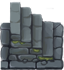

Improved ADOM Guidebook
Previous - TOC - Next
Shortcut to the surface

A shortcut to the surface from deep in the CoC will be found at about D: 32. This is very handy for those who need access to the surface to complete quests
for Ultra endings, visit the Quickling Tree, do the Unicorn quests, etc. It is generally found two dungeon levels below the Casino. It is obvious because
there will be two up staircases on the level. The shortcut causes the PC to emerge in Darkforge. The fact that it is close to the Casino is handy if the
PC needs access to an aligned altar to remove Dooming and/or Cursing caused by robbing the Casino.
If the Eternal Guardian was passed peacefully by wearing the Ring of the High Kings, this shortcut works in both directions. If the Eternal Guardian was
not passed peacefully, the shortcut works in the up direction only, meaning you cannot access lower parts of CoC via Darkforge. This is a powerful argument
for retrieving the RotHK and not attempting to pass the EG by trickery or combat.
Updated August 2nd, 2009